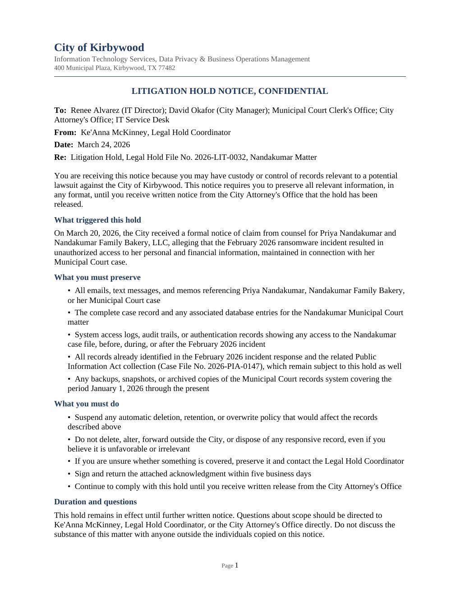
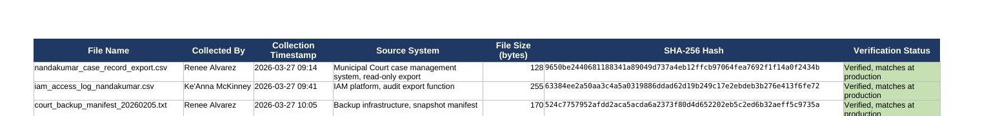

This case picks up directly after Case 008, where the City of Kirbywood responded to a public records request about the same ransomware incident. A bakery owner whose civil case was pending in Municipal Court at the time of the breach notices suspicious activity on her business bank account. Her attorney sends the City a formal notice of claim under the Texas Tort Claims Act, alleging negligent handling of the breach exposed her personal and financial information, and explicitly demanding preservation of every record related to the incident.
Determine when the duty to preserve was actually triggered, draft and distribute a litigation hold notice to every relevant custodian, track acknowledgment so there's no gap between sending a notice and confirming it landed, run a targeted eDiscovery collection scoped specifically to this claim, and maintain a defensible chain of custody for everything collected.
Has the duty to preserve actually been triggered yet, or is this still just a threat of a possible future claim? Who actually needs to receive this hold, and how do we know they got it and understood it? What has to be collected here that the original public-records search never touched?
The instinct was to treat the City's strong immunity defense as a reason preservation might not be strictly necessary yet. The controlling Texas standard doesn't ask whether the City will ultimately prevail on the merits, it asks whether the City reasonably should know a claim is coming and that the evidence will be material to it. An attorney-signed notice of claim settles that question regardless of how strong the underlying defense is.
| Type | Indicator | Context |
|---|---|---|
| Statute | Tex. Civ. Prac. & Rem. Code §101.101 | Notice-of-claim requirement under the Texas Tort Claims Act |
| Case Law | Brookshire Bros., Ltd. v. Aldridge, 438 S.W.3d 9, 20 (Tex. 2014) | Controlling standard for when the duty to preserve arises |
| Case Law | Wal-Mart Stores, Inc. v. Johnson, 106 S.W.3d 718, 722 (Tex. 2003) | Underlying authority cited in Brookshire Bros. |
Hypothetical scenario: the City of Kirbywood, Priya Nandakumar, Nandakumar Family Bakery LLC, and the law firm Reyes & Whitlock, PLLC are entirely fictional, created to model a realistic municipal litigation hold workflow. The legal standards applied are real and were verified against current Texas case law and statute.


Mockup documents built for this simulated scenario; no real individuals, business, or law firm are depicted.
| # | Artifact | What It Shows | |
|---|---|---|---|
| 01 | Notice of Claim | The trigger document: a realistic attorney demand letter | .docx |
| 02 | Litigation Hold Trigger Memo | Legal analysis applying the correct Texas standard | .docx |
| 03 | Litigation Hold Notice | The instruction sent to every custodian | .docx |
| 04 | Custodian Acknowledgment Log | Tracking who received and confirmed the hold | .xlsx |
| 05 | eDiscovery Collection Plan | Scoped, methodical collection beyond the original search | .docx |
| 06 | Chain of Custody Hash Log | Real, computed SHA-256 values for every collected file | .xlsx |
All six artifacts are downloadable above (Word / Excel). This case simulates a Legal Hold Coordinator / eDiscovery Analyst / Litigation Support Specialist role, working under the City Attorney's Office.
This case follows directly from Case 008, which covers the public records side of the same incident.
"Has the duty to preserve actually been triggered yet, or is this still just a threat of a possible future claim?"
The attorney-signed notice of claim itself, measured against the Texas standard for when a duty to preserve arises, not against whether the City is confident it will win on the merits.
The instinct was to treat the City's strong immunity defense as a reason preservation might not be strictly necessary yet.
The Brookshire Bros. standard doesn't ask whether the City will ultimately prevail, it asks whether the City reasonably should know a claim is coming and that the evidence will matter. An attorney-signed demand letter settles that question regardless of the merits.
Duty to preserve and likelihood of losing are two different questions. Treating them as the same one is exactly the kind of mistake that turns a winnable case into a spoliation problem.